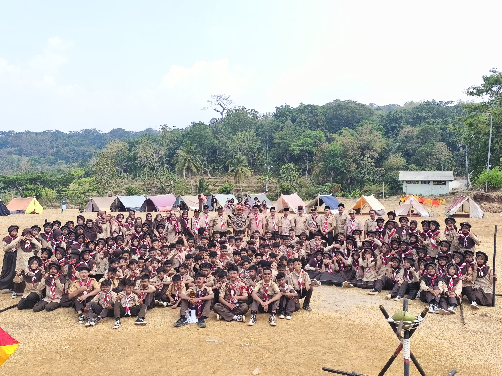

Ekstrakurikuler Pramuka

Tentang Pramuka
Ekstrakurikuler Pramuka merupakan salah satu kegiatan yang bertujuan untuk membentuk karakter peserta didik melalui kegiatan yang mengajarkan kedisiplinan, kemandirian, tanggung jawab, kerja sama, dan kepemimpinan.
Kegiatan Pramuka
Dalam kegiatan Pramuka, peserta didik mengikuti berbagai kegiatan yang dapat meningkatkan keterampilan dan pengalaman, baik secara individu maupun kelompok.
- Latihan baris-berbaris
- Latihan tali-temali
- Perkemahan
- Kegiatan kerja sama kelompok
- Latihan kepemimpinan
- Kegiatan sosial dan lingkungan
Tujuan Kegiatan
Melalui ekstrakurikuler Pramuka, peserta didik diharapkan dapat menjadi pribadi yang disiplin, mandiri, bertanggung jawab, mampu bekerja sama, serta memiliki kepedulian terhadap lingkungan dan sesama.
← Kembali ke Ekstrakurikuler